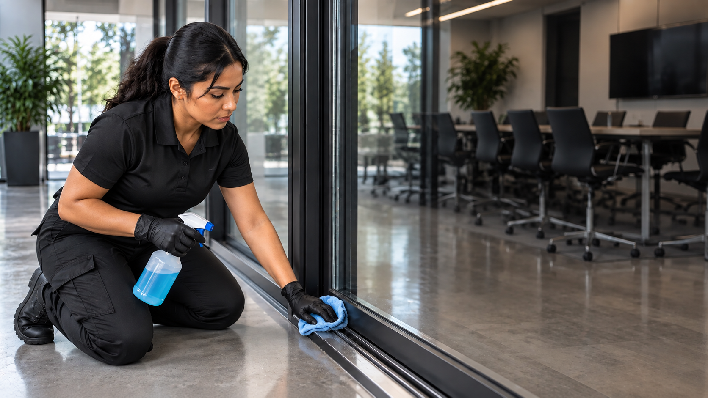

About Paradigm Janitorial Services
Professional cleaning for commercial, residential, and managed properties across Los Angeles County and San Bernardino County.
How Paradigm Approaches the Work
Paradigm Janitorial Services builds cleaning around the property, the people who use it, and the schedule that keeps the space operating.
That means clear expectations, reliable service, and attention to the areas that matter most on each visit.
Before service begins, the property can be reviewed by area, access, traffic, and timing so the cleaning plan matches how the space is actually used.
As priorities change, the schedule and scope can be adjusted without rebuilding the entire plan, which keeps the service practical for the property over time.

What We Bring to Every Property
Consistency, communication, and detailed cleaning are built into the way the service is scheduled and carried out.
Relationship Building
We prioritize meaningful relationships with our clients so we can understand their needs and deliver consistent experiences.
Integrity
Our work is driven by honesty, reliability, and a commitment to excellence.
Community Impact
Clean, well maintained spaces help create environments where people can thrive.
Expertise
Every corner, surface, and space matters. We take pride in thorough work and careful attention to detail.